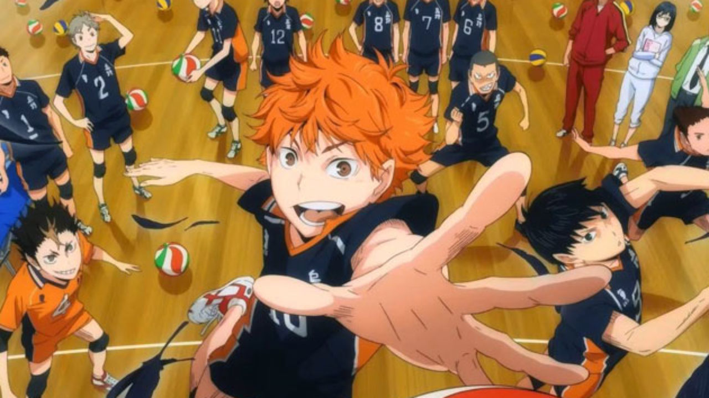

1 / 3

Via My Hero Academia
2 / 3

Via Haikyuu
3 / 3

Via Attack on Titan
Welcome to Anime Advetures, a website for anime lovers of all ages. Anime Adventures, was created to educate others whether an existing fan of anime or not on how animes are created and why. For some, Anime is an escape from reality, it gives them the chance to feel like they are part of a world that is much more enjoyable than our own. Anine isn't just cartoons, to some it's a family that's better than their own. Fans of anime can bring their comfort characters to life with cosplays and it gives them a sense of escapism. Having a second reality that is more comofrting than our own allows for anime fans to make real life friends through the same passions for anime, shifting realities and cosplaying.
My Hero Academia being a hero society based anime has a lot of highs and lows. However, one arc within the storyline particularly peekd mine (and others!) intrests, the hero killer stain arc. This arc follows the grudge of one UA student, Tenya Iida. It's around this part of the storyline the students are doing their placements and Iida chose to go to Hosu City after fidning out that's where his brother was attacked and forced into retirement. However, when Tenya is out on patrol, he finds The Hero Killer Stain and decdies to attack. He only puts himself in a more vulnerable position though, leaving Midoiya and Todoroki who happen to be in the area to help fight Stain off and save their friend and the hero that Stain had captured originally. However, due to the boys not yet having provisional hero licenses this act was illegal and therefore lead to complications later in the arc. This arc lead to the three boys being called The Murder squad or The Attemped Murder Squad within the fandom as they near enough killed Stain using their quirks.
Attack on Titan, a fairly adventure based anime that always keeps you on your toes. However, there are some moments that just shocked the fandom as a whole. For example, in the later seasons of the anime a moment that shook the whole fandom was the fight between the attack titan and the armoured titan. At this point in the series it has been diclosed that the attack titan is Eren Yeager, and the armoured titan is Reiner Braun. This information makes the fight scene between the two more exciting. This scene left fans of the series on the edge of their seats and the tension at some points in the fight was unreal. This was the first time Eren really stood up to Reiner and to be a fight scene betweent he twos titan forms made the scene that much more enjoyable.
Haikyuu, being an aniime series all about volleyball, is boring to some, but to those who really enjoy the anime the character development of some of the characters, specifically Hinata and kageyama. The relationship between the two is rough to begin with, having met in middle school and having developed a mutual hatred for one another. However, after they find out they attend the same high school they learn to get along and even master a freakishly fast quick attack that not even the other team mates can recreate let alone other teams. The height Hinata can jump and his super fast reflexes combined with kageyamas setting capabilitues allows for the two to form a powerful quick attack allowing them to not only pick up pointsa in all games but also shocking other teams and the coaches of those teams. The first time these two mastered this quick attack and used it in a proper game, the fandom was shocked.